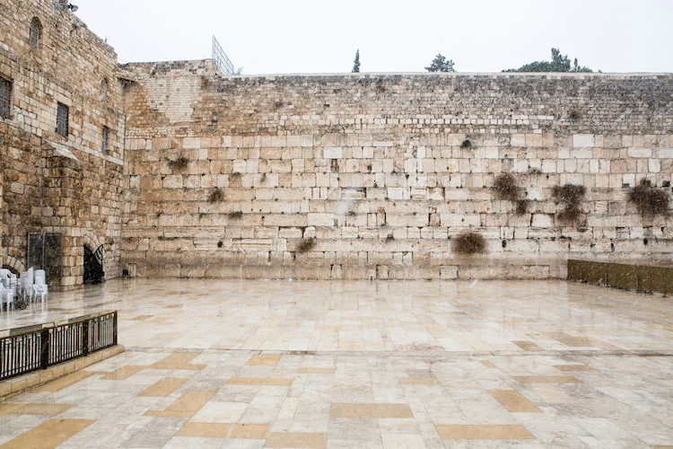
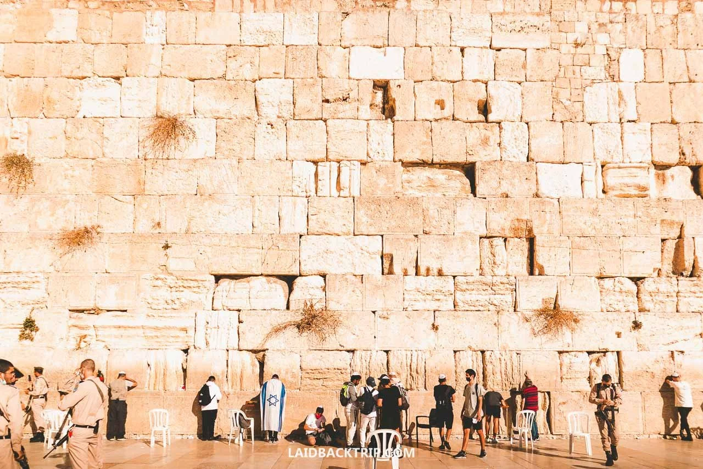
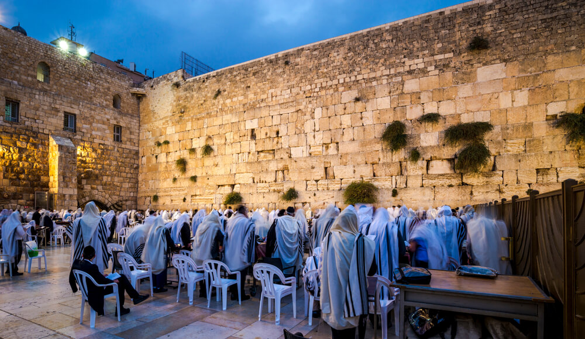
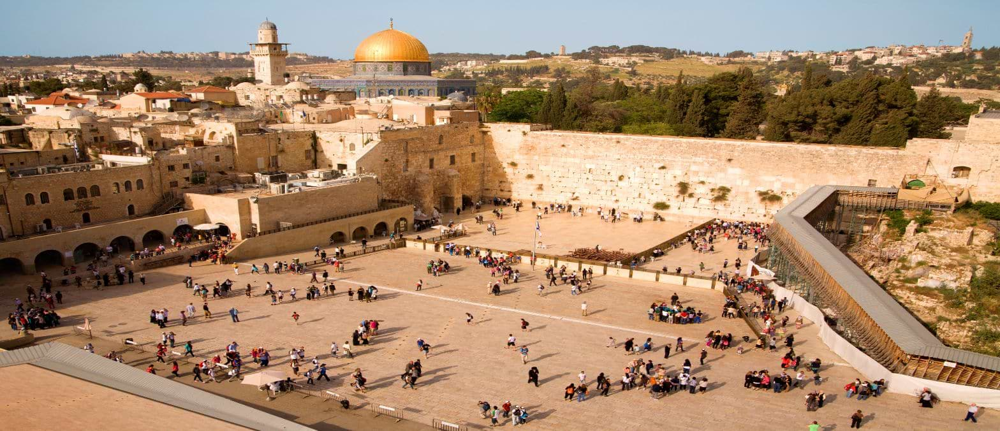

Location OverviewThe Western Wall, or Kotel, is the most sacred site where Jews can pray, located in the Old City of Jerusalem. As the last remaining supporting outer wall of the Second Temple built by King Herod in 20 BCE, it is a focal point of Jewish history and yearning. The site is open 24/7, accessible to all, and often referred to as the "Wailing Wall". | ||
|  |  |  |
|  | ||